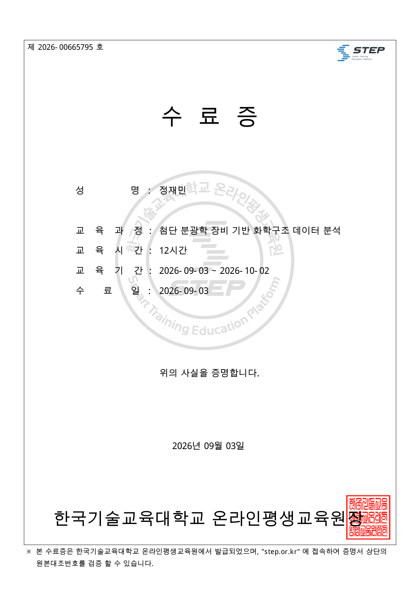

01 / Cell fabrication01 / 코인셀 제조 LCO half-cell fabricationLCO 하프셀 제조 While fabricating LCO half-cells, I observed partial delamination after roll pressing. This developed my interest in how binders and processing conditions affect adhesion between the electrode and current collector.LCO 하프셀 제조 과정에서 압연 후 전극층의 부분 박리를 관찰했습니다. 이 경험을 계기로 바인더와 공정 조건이 전극·집전체 사이의 접착에 미치는 영향에 관심을 갖게 됐습니다. Read the fabrication report코인셀 제조 보고서PDF
02 / Materials analysis02 / 소재 분석 Battery materials analysis배터리 소재 분석 I used DSC, Raman spectroscopy and ICP-OES to investigate the thermal, structural and compositional characteristics of battery materials, connecting measurement results to material properties.DSC, Raman, ICP-OES를 통해 배터리 소재의 열적·구조적·조성적 특성을 분석했습니다. 측정된 신호를 해석하고 소재의 성질과 연결하는 경험을 쌓았습니다. Read the analysis report배터리 소재 분석 보고서PDF
03 / Public data project03 / 공공데이터 프로젝트 RentBot 119렌트봇 119 As a member of Team HouseGuard, I collected and preprocessed public datasets from six agencies for a tenancy advice service. Cross-analysis of regional tenancy damage statistics helped us define the service requirements.팀 HouseGuard의 임대차 상담 서비스에서 6개 기관의 공공데이터 수집과 전처리를 맡았습니다. 지역 임대차 피해 통계를 교차 분석하고, 서비스에 필요한 요구사항을 도출했습니다. Daegu Public Data Startup Competition · 2025대구 공공데이터 활용 창업경진대회 · 2025
Certificates & awards수료증과 수상 기록 STEP Advanced spectroscopy첨단 분광학 분석 KOREATECH STEP · 12hSep 2026KOREATECH STEP · 12시간2026.09 KBIAOriginal pending원본 준비 중 Battery materials & recycling이차전지 소재 · 리사이클링 Korea Battery Academy · 132hJul–Aug 2026한국배터리아카데미 · 132시간2026.07–08 DIPOriginal pending원본 준비 중 Public data competition대구 공공데이터 공모전 DIP · Award2025대구디지털혁신진흥원 · 입상2025